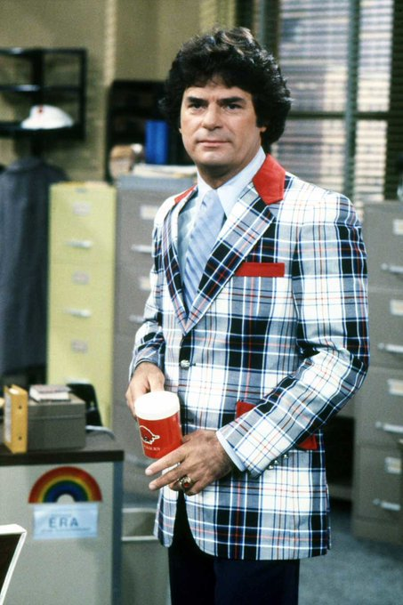
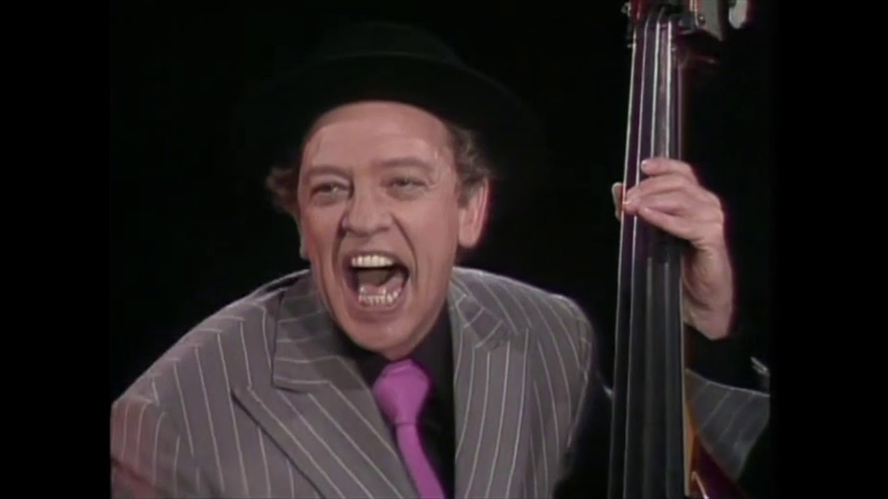
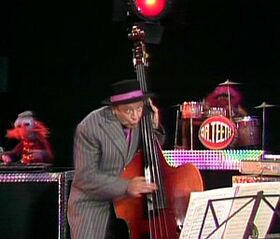
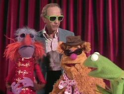
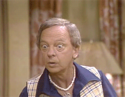
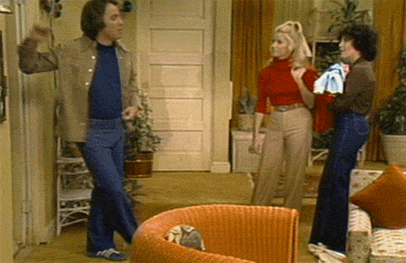
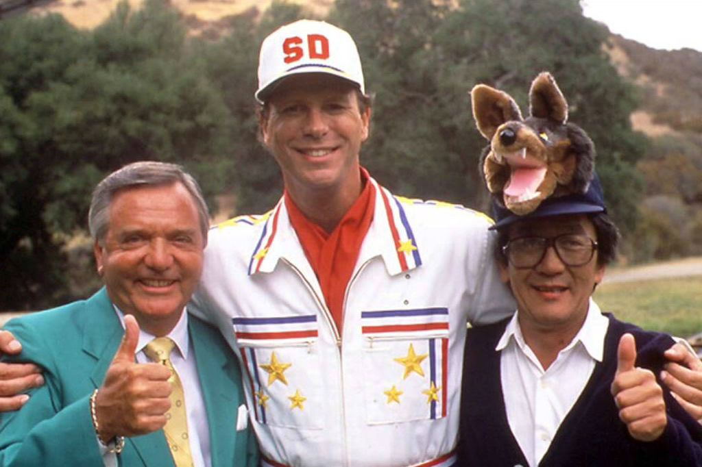
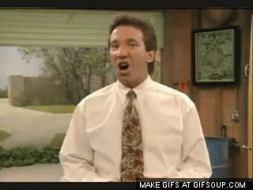
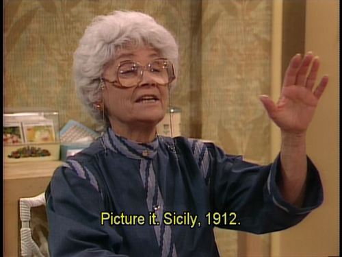

I really don't care for many modern TV shows, to tell you the truth... except Family Guy and Last Man Standing. No... my favorite shows are from the 70s and 80s! Maybe that's why I like Family Guy so much... they refer to old shows often.
WKRP In Cincinatti
I love DJs Dr Johnny Fever and Venus Flytrap... but most of all, I love that arrogant sales executive Herb Tarlek best. I want a suit like that!

The Muppet Show
Grew up with this! Glad that Disney Plus is finally showing the old episodes... but I am not happy that the "Lullaby of Birdland" number was cut from the Don Knotts episode. That was one of the most pivotal moments of the second season!



Three's Company
Speaking of Don Knotts... how can you not love him as Mr Furley, or R.F. as he preferred? And of course... Jack.


Married... With Children
Al Bundy may be a rude, abusive, neglectful, dumb ape... but he gave us one of the most inspirational quotes ever heard.
"So you think I'm a loser? Just because I have a stinking job that I hate, a family that doesn't respect me, a whole city that curses the day I was born? Well, that may mean loser to you, but let me tell you something. Every morning when I wake up, I know it's not going to get any better until I go back to sleep again. So I get up, have my watered-down Tang and still-frozen Pop Tart, get in my car with no upholstery, no gas, and six more payments to fight traffic just for the privilege of putting cheap shoes on the cloven hooves of people like you. I'll never play football like I thought I would. I'll never know the touch of a beautiful woman. And I'll never again know the joy of driving without a bag on my head. But I'm not a loser. 'Cause, despite it all, me and every other guy who'll never be what he wanted to be are still out there being what we don't want to be forty hours a week for life. And the fact that I haven't put a gun in my mouth, you pudding of a woman, makes me a WINNER!"
The Super Dave Osborne Show
Super Dave Osborne! The stuntman with the motivation to perform a... less than successful stunt every show, as well as playing host to great performers!

I loved this show so much... that I created my own Wikipedia page, "List of Super Dave Osborne Show episodes". This guide includes the Super One's musical and comedy guests, how he gets hurt at the end of every show, and his response to his announcer saying "Super Dave! Super Dave! Are you all right?"
Super Dave is late for his new show but his car arrives performing handbrake turns. Super attempts to open his show with a question period. Ray Charles sings "They Can't Take That Away from Me". At the Super Dave Memorial Sports Arena, the Super Dave Slam Dunkers perform acrobatic slam dunks. Fuji helps Super Dave perform the "Ultimate Slam Dunk" using a hydraulic catapult that will raise him upright and shoot him into the air where he will catch the ball and slam dunk it.
The Super One gets hurt: "All right, we're stopping... no we're not." Instead of raising him upright, the catapult smashes him into the glass basketball backboard. Later, while inspecting the controls, the entire hoop rig falls on him.
"Super Dave! Super Dave! Are you all right?": "I'm bleeding internally, Mike, but I think I'll have a little gauze for dinner and then I'll be fine."
The Last Word: He thanks the Super Dave Slam Dunkers, Ray Charles, and Carol Burnett. "I'd like to tug my ear and say a special goodnight to you, but I can't move my arms."
Arrival Vehicle: A white four door.
Mike Walden's Outfit: Beige and dark purple plaid jacket, white shirt, red tie and hanky, black pants (Later bright yellow), black shoes.
Special Guest Star: Carol Burnett, who heckles Super Dave at the start of the show.
2
"Lip Synching Concert Area"
Fuji Hakayito, Jenny Jones
Super Dave interviews a woman in the audience who dubiously claims to have had Elvis Presley's baby, and a woman who claims to be carrying Warren Beatty's child. Jenny Jones performs standup comedy. Super Dave originally plans to play "Vehicle Tag" with Fuji, but instead shows off the new Outdoor Lip-Synching Concert Area, where he plays the piano and lip-synchs to "The Name Game" by Shirley Ellis.
The Super One gets hurt: Fuji, mistakenly thinking they are still going to play "Vehicle Tag" runs over him with a monster truck during his encore performance.
"Super Dave! Super Dave! Are you all right?": "Yeah, putz, I'm perfect. My intestines look like your pants. I just wish I had my hands back so I could give you the finger."
The Last Word: "Remember, kids, don't try this stunt at home. On second thought, don't watch this show at home."
Arrival Vehicle: The Super Dave red motorbike and sidecar.
Mike Walden's Outfit: Bright yellow jacket, white shirt, red tie and hanky, red, yellow, and black plaid pants, white shoes.
3
"Vehicle Safety Centre - Buckle Up"
Robert Gruenberg, Kathy Walker, Bill Roberts
At the Super Dave Confidence Training Area, Super Dave, accompanied by Donald, receives the "Man of the Year" award from the Academy of Human Performance. Robert Gruenberg juggles a chainsaw, an egg, and an apple. Kathy Walker and Bill Roberts do impersonations of Joan Rivers and Sonny Bono, rounding it off doing Sonny and Cher singing "I Got You Babe". At the Super Dave Vehicle Safety Centre, Super Dave acts as a crash test dummy and drives into a wall to demonstrate the dangers of not buckling up.
The Super One gets hurt: "All right, I'm speeding up, and I can see the wall, and I'm dead." After crashing the car, getting out, and giving some additional tips, Super Dave states he doesn't have the energy to return to the car. Mike, trying to help, suggests the car be brought to him, which ends up running him down.
"Super Dave! Super Dave! Are you all right?": "You know, Mike, I don't know if I ever told you this before, but glass is good roughage. Yeah, Butt-breath, I'm perfect."
The Last Word: A seatbelt safety poem:
"Roses are red,
Mike you're a putz,
if I hadn't been wearing my seatbelt,
I could have squashed my knees."
("I would have said nuts, but my knees are where my nuts used to be.")
Arrival Vehicle: The Super Dave red hovercraft.
Mike Walden's Outfit: Yellow and purple plaid jacket, red tie and hanky, white shirt, black pants. Later: Bright yellow jacket, red tie with diagonal white stripes, red hanky, white shirt, black pants.
Home Improvement
And who doesn't love watching THIS guy fall prey to his own clumsiness? Oh, that Tim Allen. Loved him in Home Improvement, love him in Last Man Standing.

Golden Girls
Sophia always doles out the best insults... and the best stories from Sicily.

I've said it before and I'll say it again... the classics are the best!
.jpg)